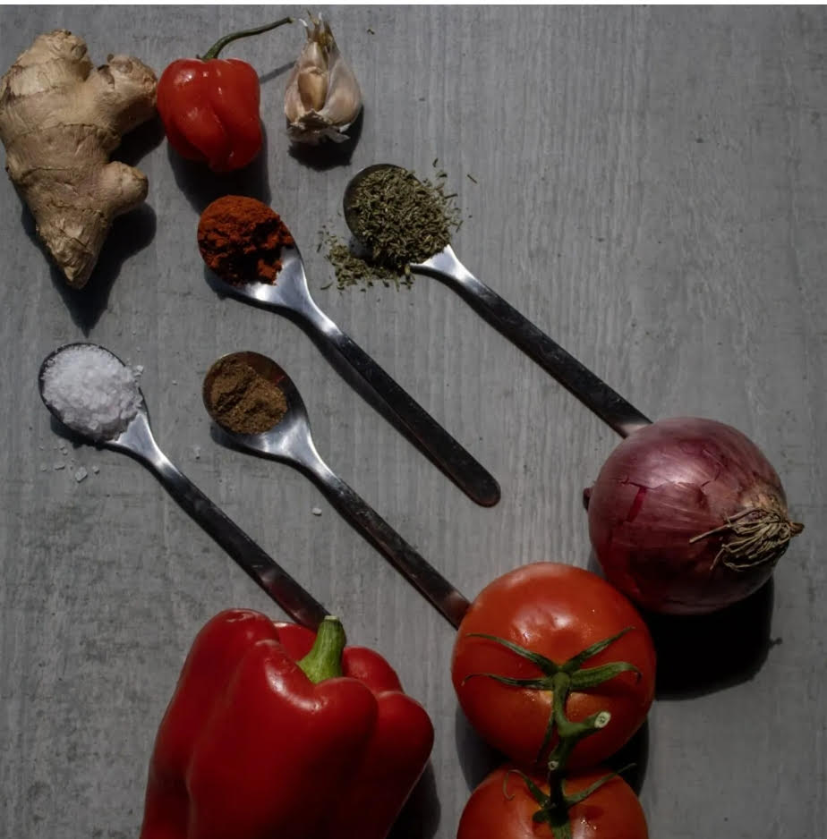
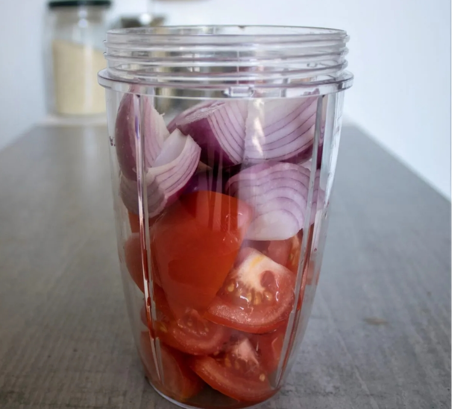
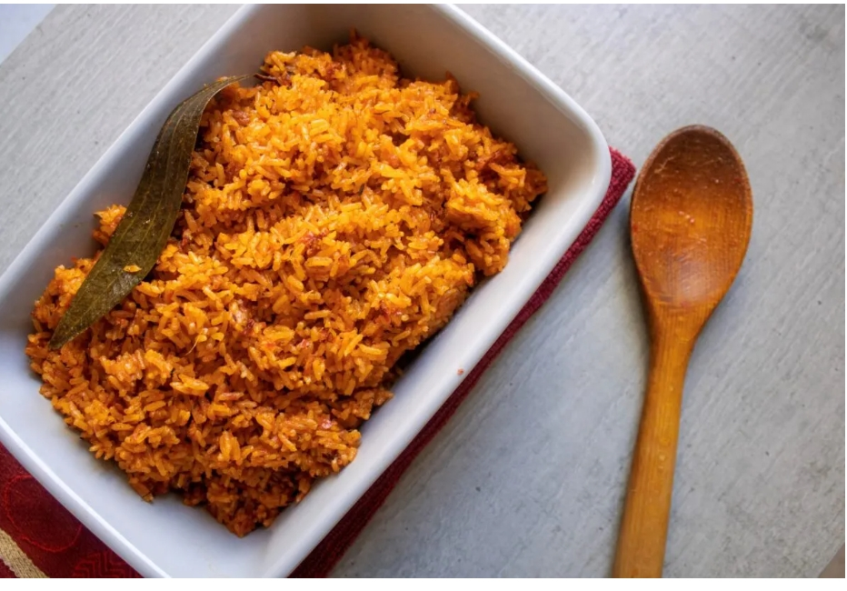
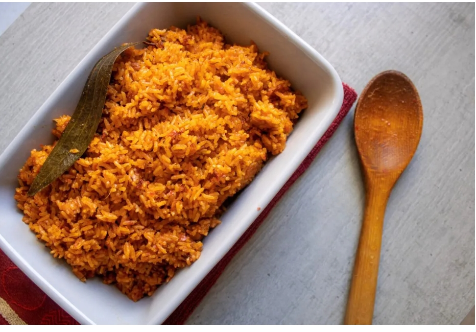

The Tastiest Simplicity
Rice dishes are very common in most West African cultures and Nigeria
jollof rice is one of many great variations. Jollof rice itself is popular
in countries such as Ghana, Nigeria, and Senegal. The debate on which country
makes the best Jollof could go on forever. As a Nigerian, I can say that aside
from the taste and flavour, a beautiful thing about the Nigerian jolof Rice
dish is how it varies. From the classic Jollof, party style Jollof and a recent
favourite of mine which is the basmati Jollof and more. This recipe is the more
common and classic recipe, used by most home cooks. I wouldn't go as far calling
it the most traditional, however, it upholds the desired standard of classic dishe. Which is:
- vibrant in colour,
- use of fresh ingredient,
- rich in flavour,
- spicy and aromatic,
- classic long-grain rice (which arguably holds on flavour better)
Complex not complicated
A dish that requires simple steps, but is seemingly complicated. To
some people, it comes naturally whilst for others it's a journey to master
just the basics. However, I say it's a journey that is worth it all! A
delicious dish that encompasses: Blitz, fry, simmer, and steam, no more, no less.
This recipe will guide even the novice of novices to embark on this delicious journey. One
of the many jollof rice variations that I promise you will enjoy.
Recipe Profile: Components of the Classic Jollof Rice
The ingredients for jollof rice each play a crucial role in creating its rich, vibrant
flavour. Tomatoes, red ball pepper, and red onion form the base of the dish, providing
sweetness, acidity, and a depth of flavour. Fresh ginger and garlic add aromatic warmth
and a subtle spice that enhances the overall taste. Scotch bonnet pepper brings the neccessary
heat, which is essential for the dish's bold profile. Sunflowers oil is used for frying and
brings the ingredients together, allowing their flavours while providing a hearty base. paprika
powder adds smoky undertone, while dried thyme brings an earthy, herbal note. Nutmeg introduces
a hint of sweetness and warmth, balancing th spices. Bay leaf adds complexity and subtle bitterness,
and salt brings out all the flavours.
Lastly, vegetable stock plays a dual role in jollof rice- it not only enriches the dish with deep,
savoury flavour but also serves as the cooking liquid that allows the rice to absorb all the ingredients'
flavours. As the rice cooks, the stock ensures that the spices, herbs, and aromatic vegetable blend seamlessly,
resulting in a rich and well-balanced dish. This makes the vegetable stock an essential component for both
flavour and the cooking process, tying everything together in the final product.

- Prep time: 15 minutes
- Cook time: 30 minutes
- Servings: 3 plates
- Difficulty: Beginner
Ingredients
- 4 plum tomatoes
- 1/2 bell pepper
- 1 red onion
- 1 thumb-size fresh ginger
- 2 garlic gloves
- 1 scotch bonnet pepper
- 1/4 cup sunflower oil
- 1 cup long-grain rice (washed)
- 1 teaspoon paprika powder
- 1 teaspoon dried thyme
- 1/4 teaspoon nutmeg
- 1 bay leaf
- 1 & half teaspoon salt
- 1 cup vegetable stock
Instructions
  Chop the tomatoes, onion, and bell papper into chunks. place
into a blender/food processor together with the ginger, garlic,
and scotch bonnet pepper. then blitz into a smooth paste.
Place a pot medium heat, pour in the sunflower oil, and the Blended
mixture. Stir and allow to sizzle, then place a lid over it, reduce heat
to low, and simmer for 20 minutes.
After simmering for 20 minutes, remove the lid, then add the spices
and seasonings (paprika, thyme, nutmeg, bay leaf, and salt). stir altogether.
Also pour in the rice and vegetable or meat stock and stir together.
Place a piece of aluminium foil into the pot, covering the entire surface of the rice
(this will keep the steam in), then place a lid over the pot. cook for 20 minutes on low
heat (Stirring occationally to cook the rice evenly and also to prevent it from burning at the bottom)
Remove lid, bin the aluminium foil and give the rice a gentle stir, then return the lid
and cook for another 5 minutes.
Now the rice should be ready to serve. serve hot with your favourite sides snd enjoy!

Chop the tomatoes, onion, and bell papper into chunks. place
into a blender/food processor together with the ginger, garlic,
and scotch bonnet pepper. then blitz into a smooth paste.
Place a pot medium heat, pour in the sunflower oil, and the Blended
mixture. Stir and allow to sizzle, then place a lid over it, reduce heat
to low, and simmer for 20 minutes.
After simmering for 20 minutes, remove the lid, then add the spices
and seasonings (paprika, thyme, nutmeg, bay leaf, and salt). stir altogether.
Also pour in the rice and vegetable or meat stock and stir together.
Place a piece of aluminium foil into the pot, covering the entire surface of the rice
(this will keep the steam in), then place a lid over the pot. cook for 20 minutes on low
heat (Stirring occationally to cook the rice evenly and also to prevent it from burning at the bottom)
Remove lid, bin the aluminium foil and give the rice a gentle stir, then return the lid
and cook for another 5 minutes.
Now the rice should be ready to serve. serve hot with your favourite sides snd enjoy!

Nutrition
Calories: 434cal | Carbohydrate: 60g | Protein: 6g | Fat: 19g | Saturated Fat: 2g|
Polyunsaturated Fat: 1g | Monounsaturated Fat: 15g | Sodium: 1.457mg | Potassium: 410mg
| Fiber: 3g | Sugar: 6g | Vitamin A: 1.852IU | Vitamin C: 45mg | Calcium: 49mg | iron: 2mg
Recipe source